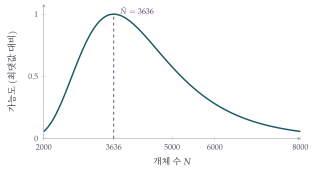

STEP II 2000, 문제 13
계속 읽기 전에 문제를 먼저 읽어 보자. 문제는 STEP Support Programme의 문제 데이터베이스에 있다: step.maths.org/questions/00-s2-q13
도입
어떤 섬에 들쥐는 몇 마리나 살고 있을까? 들쥐를 하나하나 세는 것은 불가능하다. 숨고, 돌아다니고, 서로 비슷하게 생겼기 때문이다. 하지만 몇 마리를 잡아 표시를 한 뒤 놓아주고, 다시 몇 마리를 잡을 수는 있다. \(200\)마리에 표시를 했고, 두 번째로 잡은 \(200\)마리 가운데 \(11\)마리에 표시가 되어 있다면, 전체 개체 수의 대략 \(\frac{11}{200}\)에 표시가 되어 있는 셈이다. 따라서 개체 수는 약 \(200 \times \frac{200}{11} \approx 3636\)이다.
이러한 포획–재포획(capture–recapture) 방법은 물고기, 새, 고래의 개체 수를 추정하는 데 쓰이며, 마약 사용자, 노숙인, 전쟁 사상자처럼 전부 셀 수 없는 모든 집단의 규모를 추정하는 데에도 쓰인다. 이 문제는 직관적인 추정을 통계적 추정에서 가장 중요한 아이디어인 최대가능도(maximum likelihood) 원리를 이용해 탄탄한 기반 위에 올려놓는다. 그 원리란, 관측된 자료가 나올 확률을 가장 크게 만드는 값을 미지수의 값으로 고르라는 것이다.
시작하기 전에
들쥐가 모두 \(N\)마리이고, 그 가운데 \(200\)마리에 표시가 되어 있다. \(200\)마리를 임의로 표본으로 뽑는다. 정확히 \(11\)마리에 표시가 되어 있을 확률은 얼마인가?
같은 가능성을 가진 \(\binom{N}{200}\)가지 표본 가운데에서, 표시된 들쥐 \(200\)마리 중 \(11\)마리를, 표시되지 않은 \(N - 200\)마리 중 \(189\)마리를 고르면 되므로 \[p_N = \frac{\binom{200}{11}\binom{N - 200}{189}}{\binom{N}{200}}.\] 이것이 초기하분포(hypergeometric distribution)이다.
차근차근 풀기
단계 1 가능도
\(N\)이 들어 있는 이항계수(binomial coefficient)를 풀어 쓰면 \[\binom{N - 200}{189} = \frac{(N - 200)!}{189!\,(N - 389)!}, \qquad \binom{N}{200} = \frac{N!}{200!\,(N - 200)!},\] 이므로 \[p_N = \binom{200}{11}\frac{200!}{189!}\cdot\frac{\bigl((N - 200)!\bigr)^2}{N!\,(N - 389)!} = k\frac{\bigl((N - 200)!\bigr)^2}{N!\,(N - 389)!}. \qed\] 자료를 고정하고 미지수 \(N\)의 함수로 볼 때, \(p_N\)을 가능도(likelihood)라고 한다.
단계 2 자연수 범위에서 최대화하기
\(N\)은 자연수이므로 미분을 쓰기가 곤란하다. 대신 \(p_{N+1}\)과 \(p_N\)을 비교해 보자. 두 값의 비가 \(1\)보다 큰 것은 언제인가?
계승(factorial)은 대부분 약분된다. \[\frac{p_{N+1}}{p_N} = \frac{(N - 199)^2}{(N + 1)(N - 388)}.\] 이 값이 \(1\)보다 큰 것은 \((N - 199)^2 > (N + 1)(N - 388)\)일 때, 즉 \(N^2 - 398N + 39601 > N^2 - 387N - 388\), 다시 말해 \(11N < 39989\), \(N < 3635.4\)일 때이다. 따라서 \(p_N\)은 \(N = 3636\)까지 증가하고 그 뒤로 감소한다. 즉 최대가능도 추정값(maximum likelihood estimate)은 \[\hat N = 3636. \qed\] 이것은 직관적인 추정값 \(\frac{200 \times 200}{11} = 3636.4\)의 정수 부분이다.
단계 3 세 번째 표본
두 번째 표본을 뽑은 뒤 그 안에 있던 표시되지 않은 들쥐 \(189\)마리에도 표시를 하므로, 이제 표시된 들쥐는 \(389\)마리이다. \(N = 3636\)으로 놓으면 표시되지 않은 들쥐는 \(3636 - 389 = 3247\)마리이다. \(200\)마리로 이루어진 세 번째 표본에 표시된 들쥐가 정확히 \(j\)마리 들어 있을 확률은 \[\frac{\binom{389}{j}\binom{3247}{200 - j}}{\binom{3636}{200}}.\] \(j = 0, 1, \ldots, 200\)에 대한 이 확률들의 합은 \(1\)이어야 하므로, 문제의 항등식을 얻는다.■

돌아보기
미지수의 함수로 본 자료의 확률. 가능도는 보통의 관점을 뒤집는다. 자료는 고정되어 있고 모수(parameter)가 변한다.
이산적인 최대화에는 비를 이용한다. 이웃한 항을 비교하여 정수를 변수로 하는 함수의 최댓값을 찾았다.
확률의 합은 \(1\)이다. 모든 결과에 대해 분포를 더하여 조합론적 항등식(방데르몽드 항등식(Vandermonde’s identity))을 증명했다.
숨은 수학
최대가능도
1910년대와 1920년대에 로널드 피셔(Ronald Fisher)가 발전시킨 최대가능도 원리는 다음과 같다. 미지의 모수를, 관측된 자료가 나올 확률을 가장 크게 만드는 값으로 추정하라. 이것은 단연 가장 널리 쓰이는 추정 방법으로, 자료에 곡선을 맞추는 일부터 기계 학습의 신경망을 훈련하는 일까지 두루 쓰인다. 신경망의 “손실 함수”는 대개 음의 로그 가능도이다. 피셔는 모형이 대부분의 일상적인 모형에서 성립하는 의미로 충분히 잘 정의되어 있다면, 표본이 클 때 최대가능도 추정값이 근사적으로 정규분포를 따르며 어떤 합리적인 추정량보다도 뒤지지 않을 만큼 정밀하다는 것을 보였다. 중요한 예외도 있다. 다음 절(13.3 절)에서는 미지수가 가능한 가장 큰 값, 즉 분포의 끝점인데, 이때 최대가능도 추정값은 사뭇 다르게 행동한다. 그 오차는 근사적으로 정규분포를 따르지 않으며, \(\frac{1}{\sqrt n}\)이 아니라 \(\frac1n\)처럼 줄어든다.
추정은 얼마나 정밀한가?
그림 13.2.1을 보면 가능도의 폭이 넓다. \(11\)마리의 재포획은 그리 많은 정보가 아니다. 대략 계산해 보자. 두 번째 표본에 들어 있는 표시된 들쥐의 수는 평균이 \(\frac{200 \times 200}{N}\)인 푸아송 분포(Poisson distribution)를 근사적으로 따르므로, 그 표준편차는 약 \(\sqrt{11} \approx 3.3\)이고, 상대 오차는 약 \(30\%\)이다. 이 오차는 \(N\)의 추정값에도 그대로 이어진다. \(N\)을 \(10\%\) 이내로 추정하려면 생물학자들은 약 \(100\)마리를 재포획해야 한다. 통계학자들은 단순한 추정값의 작은 편향(bias)도 보정하는데, 이때 채프먼 추정량(Chapman estimator) \(\frac{(M + 1)(C + 1)}{R + 1} - 1\)을 쓴다. 여기서 \(M\)과 \(C\)는 두 번 잡은 개체의 수이고, \(R\)은 재포획된 개체의 수이다.
라플라스(Laplace)는 1802년에 같은 아이디어를 이용하여 인구 조사 없이 프랑스의 인구를 추정했다. 그는 한 해 동안 나라 전체에 등록된 출생 수를 알고 있었고, 표본으로 고른 몇몇 코뮌(commune)에 대해서는 인구와 출생 수를 모두 알고 있었다. 인구와 출생 수의 비가 어디에서나 같다고 가정하여, 그는 프랑스의 인구를 약 \(28\)백만 명으로 추정했고, 불확실성의 척도까지 제시했다. 이 방법은 1890년대에 덴마크의 피오르에서 가자미에 표시를 한 C. G. J. Petersen과, 1930년대에 새 가락지를 이용한 Frederick Lincoln에 의해 동물 개체 수 추정에 다시 발견되었다. 그래서 지금도 흔히 링컨–피터슨(Lincoln–Petersen) 추정량이라고 부른다.
사고 기술
미지수를 추정하려면, 관측한 결과의 확률을 미지수의 함수로 쓰고 그것을 최대화하라.
대학에서 최대가능도는 통계적 추론의 뼈대이며, 추정값이 얼마나 정밀한지에 대한 이론(피셔 정보(Fisher information))과 경쟁하는 모형을 비교하는 방법(가능도비 검정(likelihood ratio test))이 그 위에 세워진다.
더 도전하기
일반 공식. \(M\)마리의 동물에 표시를 하고, \(C\)마리로 이루어진 두 번째 표본에 표시된 동물이 \(R\)마리 들어 있다면, \(N\)의 최대가능도 추정값이 \(\frac{MC}{R}\)의 정수 부분임을 보여라.
방데르몽드. 여자 \(a\)명과 남자 \(b\)명 가운데에서 \(c\)명으로 이루어진 위원회를 뽑는 방법의 수를 세어 \(\sum_j\binom{a}{j}\binom{b}{c - j} = \binom{a + b}{c}\)를 증명하여라.
동전 던지기. 앞면이 나올 확률 \(p\)를 모르는 동전을 \(n\)번 던져 앞면이 \(h\)번 나왔다. \(p\)의 최대가능도 추정값이 \(\frac hn\)임을 보여라.
재포획이 없는 경우. 두 번째 표본에 표시된 들쥐가 한 마리도 없다면 최대가능도 추정값은 어떻게 되는가? 이것은 이 방법에 대해 무엇을 말해 주는가?
더 읽을거리
David Spiegelhalter, The Art of Statistics (Pelican). 추정과 불확실성에 관한 책이다.
George Seber, The Estimation of Animal Abundance (Blackburn). 포획–재포획에 관한 표준 참고서이다.
John Rice, Mathematical Statistics and Data Analysis (Duxbury). 최대가능도를 포함한 수리통계학 입문 교재이다.